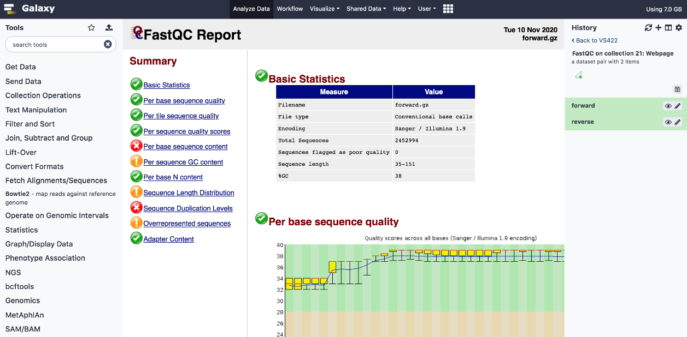

Galaxy portal
Galaxy is an open platform for supporting data-intensive research focusing on biomedical, chemical, and general data analyses, including statistics, machine learning, and visualization tools. The analyses can be performed using a graphical environment and hence could be easily used by non-bioinformaticians. The RTU Galaxy instance is connected to the HPC cluster and serves as a web-based GUI to submit analyses to the cluster.
The Galaxy interface is shown in the following figure. It is an example output of the sequencing quality control tool FastQC. 
Access
RTU HPC Galaxy instance is available here: https://galaxy.hpc.rtu.lv.
Existing HPC users should be able to auto-register and access with their HPC cluster RUDENS credentials (login and password).
New users can request access by sending an email to hpc@rtu.lv or filling in the APPLICATION FORM
To use Galaxy in a study course as part of the curriculum, the course instructor should send a request to hpc@rtu.lv. The course will be registered in the Waldur self-service portal, and the instructor will have the right to invite and register their students. Access method through Waldur is described HERE
Any requests regarding tools or reference datasets can be sent to support e-mail hpc@rtu.lv as well.